Management Interface Page: Overview
Description
This page offers a live systemwide inspection tool to visualize the heart of the system and the relationships that exists beween elements. It helps understand the system behavior and troubleshoot the inner entities as the system is running.
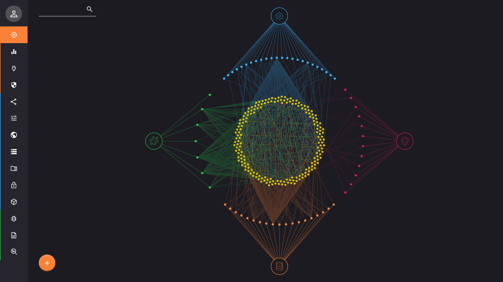
This representation is dynamic and you can navigate with the mouse to zoom (scroll), move around (drag), and interact (click) with the dots. If the view is too crowded or if you want to isolate a subset, you can drag dots around.
The dots are linked together with colored lines based on 4 aspects:
- Factory: the blue component on top represents the internal factory that is responsible to create, document, and update entities. It is needed to track what category and type of object is exposed by an entity. The direct linked blue dots are the different categories. You can click on them to highlight only the relevant entities that are part of that category.
- Managers: the red component on the right represents the different systemwide managers that present shared and common behavior across the entire system. The direct linked red dots represent the different manager types. You can click on them to highlight the current implementation entity.
- Registry: the orange component on the bottom represents the registry of the system, this is where all entities are maintained and organized in different categories. The direct linked orange dots are the different categories. You can click on them to highlight all the entities that are contained in that part of the registry.
- Plugins: the green component on the left represents the different plugins that are loaded in the system. It helps keep track of the origin of entities and the dependencies of the system. The direct linked green dots are the plugins themselves. You can click on them to highlight all the entities that is attached to that plugin.
All entities in the system are displayed in the middle with yellow dots. You can click on them to display specific details. and visualize their relationship with the reference aspects listed above.
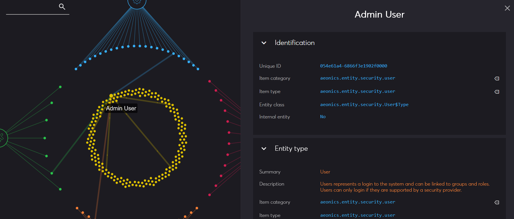
Using the search box in the top left corner of the page, you can filter only relevant entities. You can search by name or by ID.
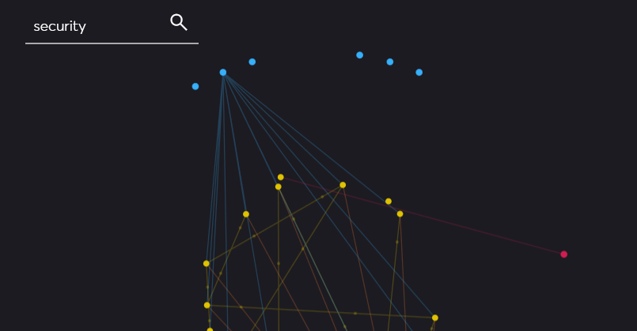
Details Panel
The details panel appears on the right of the screen when you click on a dot. Each type of dot (color) will display its own set of information.
Factory
When clicking on a factory (blue) dot, the details panel will display all entities of that category, regrouped by implementation type. You can filter the content and click on any listed entity to get its own details.
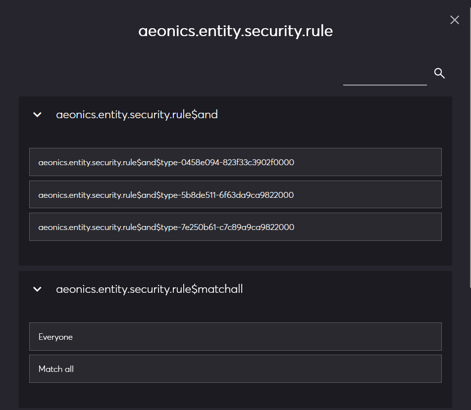
Registry
When clicking on a registry (orange) dot, the details panel will display all entities that are registered in that category. You can filter the content and click on any listed entity to get its own details.
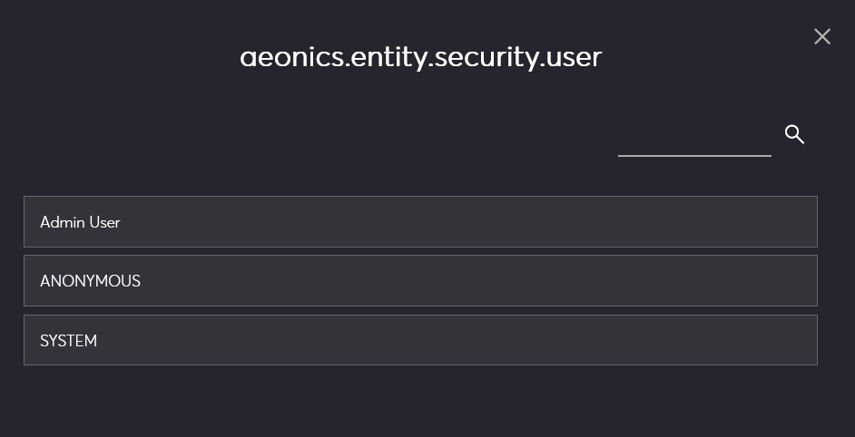
Plugin
When clicking on a plugin (green) dot, the details panel will display all entities related to that plugin. You can filter the content and click on any listed entity to get its own details.
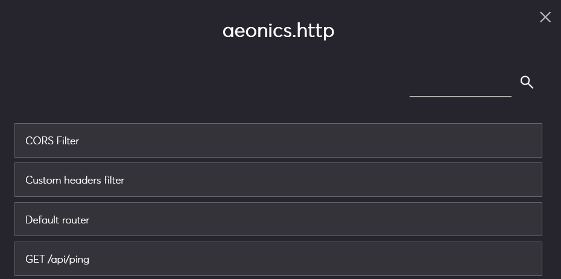
Entity
When clicking on an entity (yellow) dot, the details panel will display all the information available about it, regrouped into four main sections.
Technically speaking, an entity is a concept that regroups an Item to encapsulate a Template which provides documentation
and characteristics of the entity, and the Entity itself which stores a specific state and set of methods.
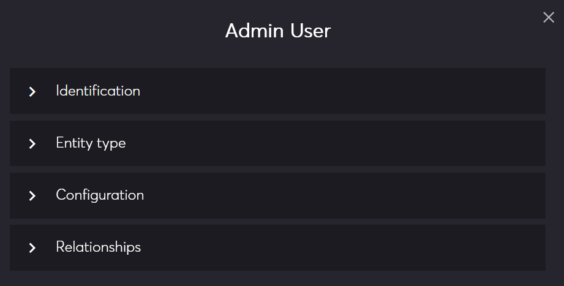
Identification
This section shows the global identification characteristics of the entity.
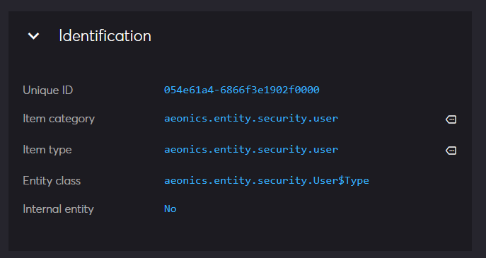
- Unique ID: this is the globally unique identifier of the entity.
- Item category: this is the category of entities to which it belongs. Clicking on the icon on the right will select and display information about this registry category.
- Item type: this is the specific type of entity. Clicking on the icon on the right will list all registry entities of the same type.
- Entity class: this is the implementing class name of the entity.
- Internal entity: whether or not the entity is considered tpo be managed by the system (yes = internal) or managed by the user (no = not internal).
Entity type
This section shows the template information of the entity.
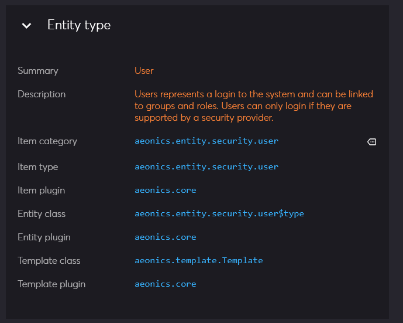
- Summary: this is the display name of the type of entity.
- Description: this is the documentation of the entity.
- Item category: this is the template item category. Clicking on the icon on the right will select and display information about this factory category.
- Item type: this is the item template type.
- Item plugin: this is the plugin that declared the item template.
- Entity class: this is the entity class that this template is able to create.
- Entity plugin: this is the plugin that declared the entity implementation class.
- Template class: this is the actual template implementation class.
- Template plugin: this is the plugin that declared the template class.
Configuration
This section lists all the configuration parameters of the entity that have been declared by the template. The current value for this entity is displayed in the rectangle area.
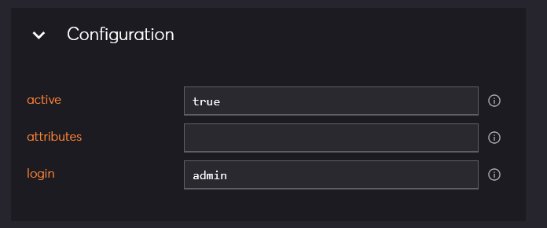
If you click on the icon on the right, it shows more information about this configuration parameter, such as the display name, description and other characteristics about the type of value it accepts.
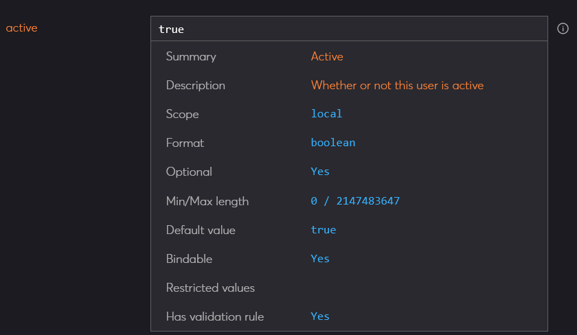
Relationships
This section lists all the relationships of the entity that have been declared by the template. If the entity has an existing relation, it is listed. Clicking the icon on the right will select and display information about that other entity.
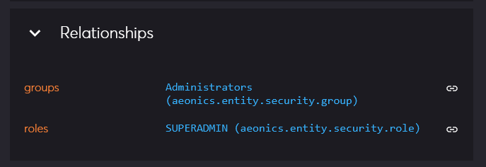
Create Entity
You can create an arbitrary entity by clicking on the bottom left button.
The first step is to choose an entity category, which depends on the available factory categories (blue dots).
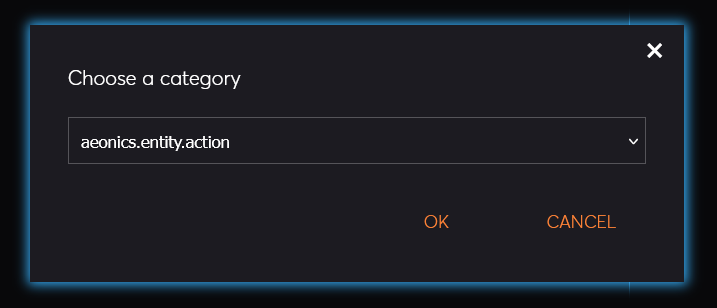
If there are multiple template types available in the selected category, they will be listed with the display name and description. Select the one you want to create.
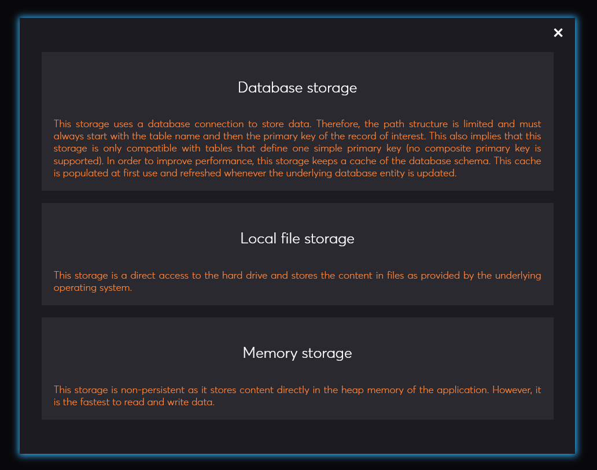
Based on the configuration parameters and possible relationships declared by the template, a form with different options will be presented. Fill-in all the required information and click save to create the new entity.
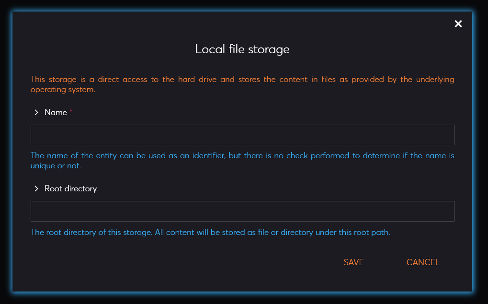